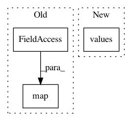

ddf383126170561049c33b95821b5bf35971147d,src/spn/structure/Base.py,,get_number_of_layers,#Any#,120
Before Change
if isinstance(node, Leaf):
return 1
return max(map(get_number_of_layers, node.children)) + 1
def rebuild_scopes_bottom_up(node):
After Change
bfs(node, count_layers)
return max(node_depth.values())
def rebuild_scopes_bottom_up(node):
In pattern: SUPERPATTERN
Frequency: 3
Non-data size: 3
Instances
Project Name: SPFlow/SPFlow
Commit Name: ddf383126170561049c33b95821b5bf35971147d
Time: 2018-06-08
Author: molina@cs.tu-darmstadt.de
File Name: src/spn/structure/Base.py
Class Name:
Method Name: get_number_of_layers
Project Name: WZBSocialScienceCenter/tmtoolkit
Commit Name: 035fcc8ed9014d14b73f1ba5c7407457845d09d7
Time: 2019-06-26
Author: markus.konrad@wzb.eu
File Name: tmtoolkit/preprocess/_tmpreproc.py
Class Name: TMPreproc
Method Name: doc_lengths
Project Name: tensorflow/datasets
Commit Name: 0f4616ac9a4f4db956a4e73c70218ad113af5e68
Time: 2020-10-26
Author: devilincarcerated020@yahoo.com
File Name: tensorflow_datasets/scripts/cleanup/url_filename_recorder.py
Class Name:
Method Name: main